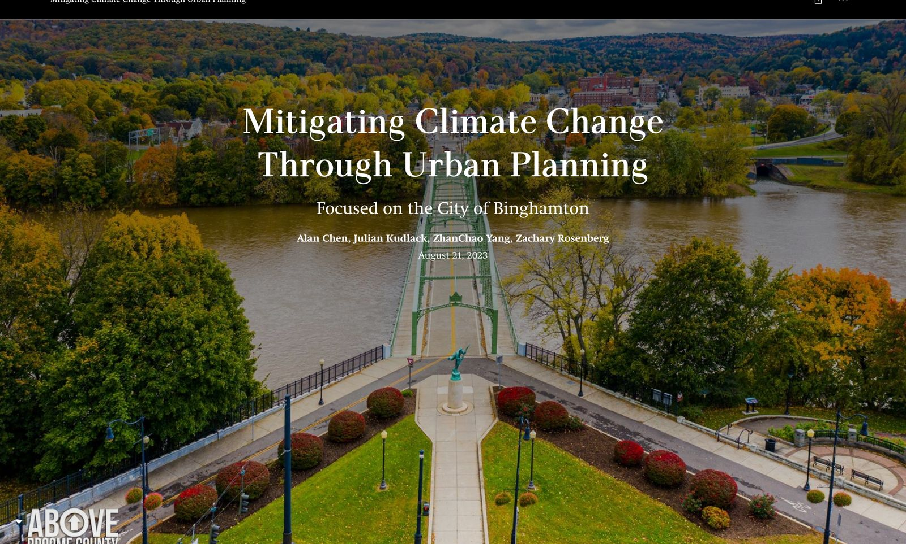

ArcGIS StoryMap

Mitigating Climate Change Through Urban Planning
Focused on the City of Binghamton
An undergraduate climate action plan for a small post-industrial city in New York's Southern Tier. The plan sets out the need for municipal climate action, builds a baseline from local emissions and land use data, weighs alternatives against explicit evaluation criteria, and recommends mitigation measures the city can realistically carry.
My role: project manager — ran the team and the schedule, set the planning strategy, wrote most of the plan, and presented it.